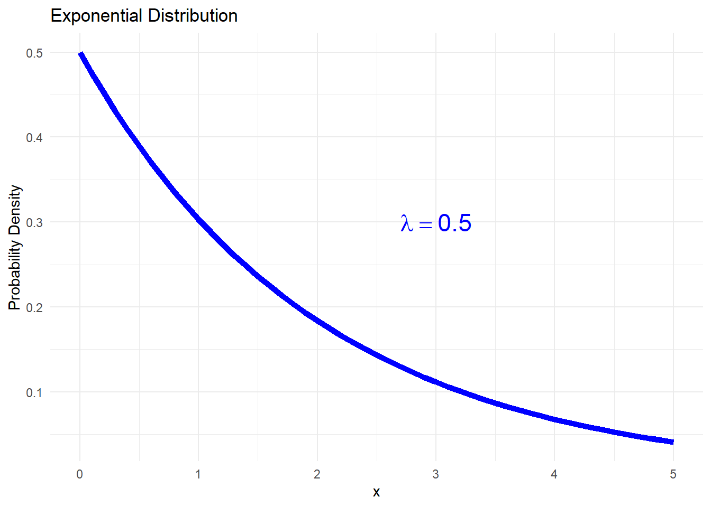

In experiments with dairy cows where some enviromental and behavior data is colected, diferent statistical distributions are crucial for capturing nuances in various variables. These distributions are part of the exponential family. They offers a robust framework for modeling and interpreting experimental outcomes.
Lets see an overviwe of the three main distributions and how its associated with the dairy cows experiment variable.
8.1 Some useful distributions
In experiments with dairy cows, statistical distributions, part of the exponential family, are essential for effectively modeling and interpreting various environmental and behavioral variables. Let’s explore an overview of the three main distributions and their relevance to the dairy cow experiment.
Exponential Distribution
The probability density function (PDF) of the exponential distribution is given by:
\[f(x | \lambda) = \lambda \cdot e^{-\lambda x} \text{ for } x \geq 0\]
where \(\lambda\) is the rate parameter.
Graphical Representation in R:
library(tidyverse)lambda <-0.5x <-seq(0, 5, by =0.1)y <- lambda *exp(-lambda * x)df_exp <-data.frame(x, y)ggplot(df_exp, aes(x, y)) +geom_line(color ="blue", linewidth =2) +labs(title ="Exponential Distribution", x ="x", y ="Probability Density") +annotate("text", x =3, y =0.3, label =expression(lambda ==0.5), color ="blue", size =6) +labs(title ="Exponential Distribution",x ="x", y ="Probability Density") +theme_minimal()

Binomial Distribution
The binomial distribution can be derived from the exponential distribution by considering the waiting time until the first success in a sequence of independent Bernoulli trials.
The probability function of the binomial distribution is given by:
\[P(X = k) = \binom{n}{k} p^k (1-p)^{n-k}\]
where \(n\) is the number of trials, \(p\) is the probability of success, and \(k\) is the number of successes.
Graphical Representation in R:
n <-10p <-0.3x <-seq(0, n, by =1)y <-dbinom(x, size = n, prob = p)df_binom <-data.frame(x, y)ggplot(df_binom, aes(x, y)) +geom_point(color ="darkgreen", size =3) +labs(title ="Binomial Distribution", x ="Number of Successes", y ="Probability") +annotate("text", x =5, y =0.2, label =expression(p ==0.3), color ="darkgreen", size =6) +labs(title ="Binomial Distribution", x ="Number of Successes", y ="Probability") +theme_minimal()
General Application: Modeling binary outcomes and ordinal categorical variables in the context of ordinal logistic regression.
Ordinal Logistic Regression:
Ordinal logistic regression is an extension of binomial logistic regression, designed to model ordinal outcomes with a meaningful order. The model introduces separate intercepts for each category, assuming the cumulative logits of each category are proportional.
Application: Valuable for analyzing data with ordered categorical responses, such as lameness scores in dairy cows.
Poisson Distribution
The Poisson distribution can be derived from the exponential distribution by considering the number of events in fixed intervals of time or space.
The probability function of the poison distribution is given by: \[P(X = k) = \frac{e^{-\lambda} \lambda^k}{k!}\]
where \(\lambda\) is the average rate of events.
Graphical Representation in R:
lambda <-3x <-seq(0, 10, by =1)y <-dpois(x, lambda)df_poisson <-data.frame(x, y)ggplot(df_poisson, aes(x, y)) +geom_point(color ="orange", size =3) +labs(title ="Poisson Distribution", x ="Number of Events", y ="Probability") +annotate("text", x =7, y =0.15, label =expression(lambda ==3), color ="orange", size =6) +ggtitle("Poisson Distribution") +labs(x ="Number of Events", y ="Probability") +theme_minimal()
General Application: Suitable for count data, especially in scenarios involving rare events.
Gaussian Distribution
The Gaussian distribution can be obtained as a limiting case of the binomial distribution when the number of trials becomes large. The Central Limit Theorem plays a crucial role in this transition.
The probability function density function of the binomial distribution is given by:
where \(\mu\) is the mean and \(\sigma\) is the standard deviation.
Graphical Representation in R:
mu <-0sigma <-1x <-seq(-5, 5, by =0.1)y <-dnorm(x, mean = mu, sd = sigma)df_gaussian <-data.frame(x, y)ggplot(df_gaussian, aes(x, y)) +geom_line(color ="red", linewidth =2) +labs(title ="Gaussian Distribution", x ="x", y ="Probability Density") +annotate("text", x =-3, y =0.35, label =expression(mu ==0~ and ~ sigma ==1), color ="red", size =6) +ggtitle("Gaussian Distribution") +labs(x ="x", y ="Probability Density") +theme_minimal()
General Application: Modeling continuous variables, offering a versatile framework for various measurements in diverse fields.
8.2 The GLM framework in R
As previously discussed, Generalized Linear Models (GLMs) provide a flexible framework for modeling various data types, going beyond traditional linear regression. The three key components of a GLM include the distribution of the response variable, the linear predictor, and the link function connecting the linear predictor to the expected value of the response.
Now, let’s explore how to define these components in the context of the earlier mentioned distributions, using R.
Binomial models
# Example: Modeling the probability of success in binary outcomesglm_binomial <-glm(response_binary ~ predictor, family =binomial(link ="logit"))
Here, we use the binomial family to specify the distribution and the logit link function, which connects the linear predictor to the probability of success in binary outcomes.
Poisson models
# Example: Modeling count data with the Poisson distributionglm_poisson <-glm(response_count ~ predictor, family =poisson(link ="log"))
In this case, the poisson family is chosen for count data, and the log link function is applied.
Ordinal models
# Assuming 'categories' is a factor with ordered levels: "Low (1)", "Medium(2)", "High(3)"glm_ordinal <-glm(categories ~ predictor, family =cumulative(link ="logit"))
In this example, the cumulative family is used for ordinal logistic regression within the glm function. The link argument specifies the logit link function, connecting the linear predictor to the cumulative odds of being in or below each category.
Gaussian models
# Example: Modeling continuous variables with Gaussian distributionglm_gaussian <-glm(response_continuous ~ predictor, family =gaussian(link ="identity"))
Continuous variables can be modeled using the gaussian family, and the choice between the identity or log link function allows for the establishment of a linear relationship between the predictor and the expected value of the response. Opting for the identity function results in a model that closely mirrors the one introduced in chapter 6.
General framework
In each example, the glm function is utilized to fit the model, and the family argument specifies the distribution family, while the link argument defines the link function. These GLM components offer flexibility in adapting the model to diverse data types, providing a powerful tool for statistical modeling in R. It’s noteworthy that beyond the linking functions illustrated in prior examples, there are numerous others available.
The following table summarize the association of each distribution with its corresponding linking function and the most commom type of variables used in dairy cows experiment:
Correspondence between each probability distribution, its associated linking functions, and the most common outcomes measured in dairy cow experiments.
Distribution
Linking Function
Variables
Binomial
Logit, Probit, cloglog
Absence and occurrence of behaviors
Poisson
Log
Number of behaviors per time interval, heart rate
Ordinal
Logit
Lameness score
Gaussian
Identity, Log
Milk production, humidity, temperature, etc.
The table offers a quick guide for selecting relevant distributions, linking functions, and understanding variables in dairy cow behavior studies. In the next chapter, we will further explore the application of these four models in dairy cow experiments.